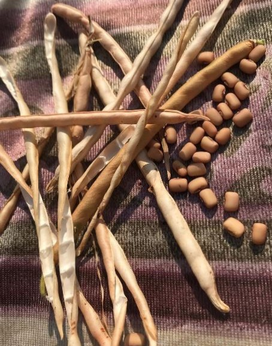

Black-eyed peas, also known as cowpeas, are a common legume cultivated around the globe. Despite their name, black-eyed peas are not peas but rather a type of bean.

Black-eyed peas are high in protein and fiber, along with micronutrients such as folate, copper, and thiamine. Black-eyed peas are very versatile and can be added to a variety of recipes, including soups, stews, and salads.

Black-eyed peas are high in antinutrients and may cause digestive issues in some people. However, soaking and cooking them can help minimize side effects.